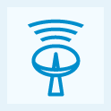
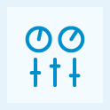

<? 
	$pagetitle = "RayV Products";
	$section = 'ecosystem';
?>
<?php include '../includes/header.php'; ?>
<?php include '../includes/rcol.php'; ?>
<div id="lcol">
	<div id="ecosystem" class="">
		<div id="" class="clearfix">
			<h1>RayV Ecosystem<sup>&trade;</sup></h1>
			<div class="bodycopy">
				<p class="firstp">The RayV Ecosystem brings together the best of the IPTV world with the power of the open Internet. Our comprehensive line of products and technologies combined with RayV's HDTV global network creates the world's first MANAGED IPTV Platform with large-scale multicasting capabilities over the open Internet</p>
			</div>
		</div>
		<div class="bluebg clearfix">
			<div class="blueproduct">
				<h3>RayV Grid<sup>&trade;</sup></h3>
				<p>The world's first broadcast grade HDTV over IP Delivery Network.</p>
				<a class="readmore_white" href="ecosystem/grid.html">Learn more</a>
			</div>
			<div class="blueproduct">
				<h3>RayV Technology</h3>
				<p>Optimized Cloud Streaming&trade; cuts delivery costs by 90%</p>
				<a class="readmore_white" href="ecosystem/technology.html">Learn more</a>
			</div>
		</div>
		<div id="products">
			<h2>RayV Products</h2>
			<div class="product">
				<a class="imglink" href="ecosystem/broadcaster.html"></a>
				<h3>RayV Encoders</h3>
				<p>A next generation software-based encoder enabling on-the-fly broadcasting, channel and playlist creation, DRM, video time-shift, and more.</p>
				<p><a  class="readmore_white" href="ecosystem/broadcaster.html">Learn more</a></p>
			</div>
			<div class="product">
				<a class="imglink" href="ecosystem/player.html"></a>
				<h3>RayV Player<sup>&trade;</sup></h3>
				<p>Combines traditional HDTV viewing with robust interactivity to create a unique viewing experience on most devices, live and on demand.</p>
				<p><a  class="readmore_white" href="ecosystem/player.html">Learn more</a></p>
			</div>
			<div class="product">
				<a class="imglink" href="ecosystem/dashboard.html"></a>
				<h3>RayV Dashboard<sup>&trade;</sup></h3>
				<p>The gateway to managing TV over IP, offering real-time reporting, geo-targeting, black out management, monetization administration, and more.</p>
				<p><a  class="readmore_white" href="ecosystem/dashboard.html">Learn more</a></p>
			</div>
			<div class="product">
				<a class="imglink"	 href="ecosystem/monitor.html"></a>
				<h3>RayV Monitor<sup>&trade;</sup></h3>
				<p>A comprehensive suite of real-time monitoring and support tools designed to constantly watch over the Grid, the channels, and the user experience.</p>
				<p><a  class="readmore_white" href="ecosystem/monitor.html">Learn more</a></p>
			</div>
		</div>
	</div>
</div>
<?php include '../includes/footer.php'; ?>
